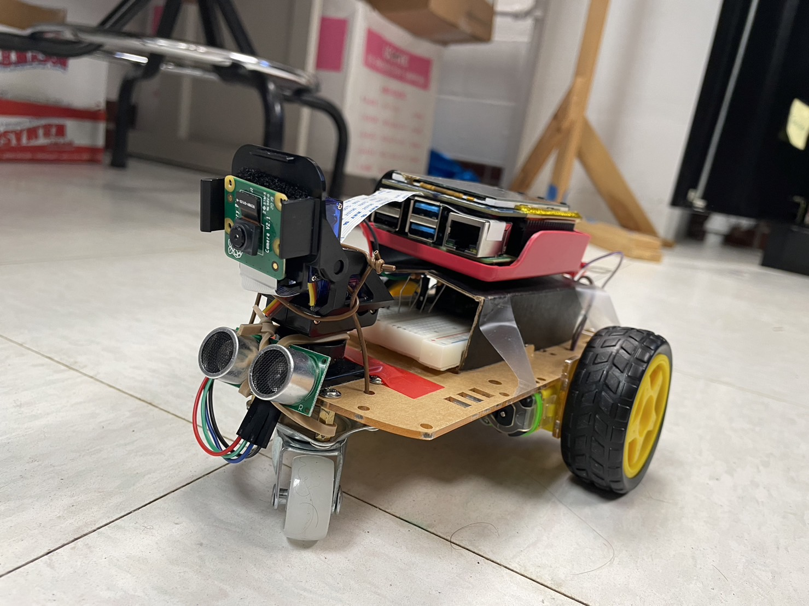

Pi Lane-Tracking
Lane tracking and emergemcy stop system on an automatic vehicle
By Jasmin An(ja499), Chen-Tung Chu(cc2396).
Demonstration Video
Introduction
With more and more technologies supporting our daily-driven vehicels, it is interesting and fun to build our own lane tracking system. With a Raspberry Pi 4 and computer vison algorithm, we also create a simple lane tracking system. We set up two motors on an arcrylic board as our wheels for the car, and Pi camera attached in front of the car to detect lanes. By using openCV to process the captured image with openCV, the car could lean towards left or right or stay straight in order to stay in the middle of the lane.
Project Objective
Our goal of the project is to build a lane tracking system on a robot car. It should be able to detect lanes and stay in the middle of the lane. Also, it should be able to stop when it detects an obstacle in front of it to mimic the emergency secnario.
Design
Hardware
Our model of the car was based on the previous lab we experimented for testing the motor with PWM signals to change the duty cycle and frquency. We made use of the already built robot as our car since we could make it turn left or right by changing the duty cycle. Based on the model, we attached micro servo on the front of the car and added Pi camera onto it. We also placed the ultrasonic sensor under the Pi camera to detect obstacles. For the details of the hardware, please refer to the parts list.
Software
For image processing, we used openCV to process the captured image from the Pi camera. We found a useful algorithm on the internet and modified it to fit our project. The algorithm is based on the Hough transform. It first converts the image to grayscale and then applies Gaussian blur to reduce noise. Then it applies Canny edge detection to find the edges in the image and draw the detected lanes on it. This is the very step of our implemenataion. Below figure shows the result of the lane detection algorithm.
After successfully detecting the lanes, we need to calculate the center of the lanes and the car. First, we need to transform the bird's eye view image to a flat image to avoid low detect accuracy caused by distortion. The code we found using cv2.calibrateCamera( ) and cv2.undistort( ) to make the original image flat to train the camera calibration and distortion coefficients. Figure below shows the example image transformation after passing the image to the two functions.

Once we tested out the image transformation, we can calculate the center of the lanes and the car.
We used polynomial regression to get the two lanes of the road. And we can detect the pixels of the image by using nine sliding windows sub-frame to detect lanes, with np.polyfit( ) we could obtain the regression curve of the lane.
Next we calculate the curvature of the lanes to determine whether we should turn left or right.
Also, we determine as emergemcy cases if the car is too close to the obstacle in front of it within 10 cm.
Overall, our ideal final output of the algorithm would be nearly the same as the following image.
Testing
To test our design and the function of our algorithm, we built a track on the floor to let the car run on it. First we built a simple lane for basic testings shown below.
Once we start testing, we soon found out that the car would not be able to stay in the middle of the lane due to two major problems:
- The image processing time was too long for the car to steer left or right
- The car is unstable for simply moving straight constantly
After debugging and troubleshooting, we thought of several ways to improve the performace of the car. The algorithm we found on the internet was intially to process recorded, 720x1280 video.
This is not quite suitable for the real-time processing of the car for the Raspberry Pi processor. We decided to use a smaller image size reduced to 640x480 and try to shorten the processing time.
For the car that is unstable to move straight, we immediately found out that it was the front wheel that causing the unstability. We found a simple way to solve this problem.
For every time we start testing, we align the front wheel to be in the center of the front chassis and face directly towards the lane.
This way, the car would be able to move straight and the algorithm would be able to detect the lane more accurately.
While we solved the issue that the car would be unstable to move straight and the image proceesing time did reduce a lot, this was still not enough to handle the real-time scenario for our project.
The average processing time for 640x480 frame was 1.5 seconds, which is not fast enough for the car to react to the lane. Thus, we decided to use an even smaller image size of 320x240.
Once we switched to the 320x240 image size, the processing time was reduced to 0.5 seconds. This is fast enough for the car to react to the lane. And we began to test our function for obstacle detection.
We found that the car would be able to detect the obstacle in front of it and stop in time.
We also faced other minor issues such as the wiring on the board sometimes get loose and the car would not be able to move. Also, the SD card reader on the Raspberry Pi sometimes would not be able to read the SD card.
This common problem was solved by simply re-taped the SD card slot.
Figure below is a screenshot of our testing video of the car running on the track.
Result
The result of the testing was quite accurate. When reducing the size of the captured image, the process time would be fast enough for our real-time reaction.
The ultrasonic sensor was solid and accurate enough to detect the obstacle in front of the car and the car would be able to stop in time.
Although the car was not able to stay in the middle of the lane all the time, it was able to detect the lane and steer left or right to stay in the lane most of the time. Below videos are our testing videos of the car running on the track and detecting obstacles.
Future Work
Despite our testing turned out quite accurate, there are still some improvements that can be made to the car. First, we still need to improve the lane tracking algorithm to make the car stay in the middle of the lane more accurately. There were some time that the car would move bizarrely due to the wrong detection of the lane. Occationally the algorithm would detect a single lane as two lanes and the car would move to the side of the lane. Figure below is an example of this.
Also, it is only a temporal and also inefficient solution for our unstability of the car to move straight. We need to find a more permanent solution to this problem. One sloution may be to reverse the whole car around, so that the two stable back wheels have more control over the car. Another solution was inspired by other previous group's project, they replaced the front wheel with a steel ball as the front wheel. This way, the car would be able to move straight more easily since it would not be steering around.
Work Distribution
Jasmin An
ja499@cornell.edu
Assembled the hardware and circuits
Optimized the lane tracking algorithm
Built the lane
Chen-Tung Chu
cc2396@cornell.edu
Found and modified the lane tracking algorithm
Designed the obstacle detection logic
Built the lane
Parts List
- Raspberry Pi $35.00
- Raspberry Pi Camera V2 $25.00
- Ultrasonic distance sensor $3.95
- Sub-micro Servo - SG51R $5.95
- SparkFun Motor Driver $9.50
- Resistors and Wires - Provided in lab
Total: $79.40
Code Appendix
For the full code of the project, please visit here
'''
video_v3.py
Main function of the project
'''
import numpy as np
import cv2
import glob
import time
import sys
import threading
import RPi.GPIO as GPIO
import myLib.calibrate_320_240 as calib
ret = calib.ret
mtx = calib.mtx
dist = calib.dist
rvecs = calib.rvecs
tvecs = calib.tvecs
global p_left
global p_right
global p_left_speed
global p_right_speed
global TRIG
global ECHO
global stop_flag, turn_left_flag, turn_right_flag, emergency_stop
stop_flag = turn_left_flag = turn_right_flag = emergency_stop = False
class LaneDetectionThreads(object):
def __init__(self):
self.camera = cv2.VideoCapture(-1)
self.camera.set(3, 320)
self.camera.set(4, 240)
self.camera_thread = threading.Timer(0.02, self.camera_update)
self.camera_thread.start()
self.frame = self.camera.read()[1]
self.l_curve = 1000
self.r_curve = 1000
self.src = np.float32(
[[0, 240], # Bottom left
[80, 160], # Top left
[240, 160], # Top right
[320, 240]]) # Bottom right
self.dst = np.float32(
[[0, 240], # Bottom left
[0, 0], # Top left
[320, 0], # Top right
[320, 240]]) # Bottom right
def camera_update(self):
self.frame = self.camera.read()[1]
self.camera_thread = threading.Timer(0.02, self.camera_update)
self.camera_thread.start()
def abs_sobel_thresh(self, img, orient='x', sobel_kernel=3, thresh=(0, 255)):
gray = cv2.cvtColor(img, cv2.COLOR_RGB2GRAY)
if orient == 'x':
abs_sobel = np.absolute(cv2.Sobel(gray, cv2.CV_64F, 1, 0, sobel_kernel))
if orient == 'y':
abs_sobel = np.absolute(cv2.Sobel(gray, cv2.CV_64F, 0, 1, sobel_kernel))
# Rescale back to 8 bit integer
scaled_sobel = np.uint8(255*abs_sobel/np.max(abs_sobel))
# Create a copy and apply the threshold
binary_output = np.zeros_like(scaled_sobel)
# Here I'm using inclusive (>=, <=) thresholds, but exclusive is ok too
binary_output[(scaled_sobel >= thresh[0]) & (scaled_sobel <= thresh[1])] = 1
# Return the result
return binary_output
# Define a function that applies Sobel x and y,
# then computes the magnitude of the gradient
# and applies a threshold
def mag_thres(self, img, sobel_kernel=3, thresh=(0, 255)):
# Convert to grayscale
gray = cv2.cvtColor(img, cv2.COLOR_RGB2GRAY)
# Take both Sobel x and y gradients
sobelx = cv2.Sobel(gray, cv2.CV_64F, 1, 0, ksize=sobel_kernel)
sobely = cv2.Sobel(gray, cv2.CV_64F, 0, 1, ksize=sobel_kernel)
# Calculate the gradient magnitude
gradmag = np.sqrt(sobelx**2 + sobely**2)
# Rescale to 8 bit
scale_factor = np.max(gradmag)/255
gradmag = (gradmag/scale_factor).astype(np.uint8)
# Create a binary image of ones where threshold is met, zeros otherwise
binary_output = np.zeros_like(gradmag)
binary_output[(gradmag >= thresh[0]) & (gradmag <= thresh[1])] = 1
# Return the binary image
return binary_output
# Define a function that applies Sobel x and y,
# then computes the direction of the gradient
# and applies a threshold.
def dir_thresh(self, img, sobel_kernel=9, thresh=(0, np.pi/2)):
# Grayscale
gray = cv2.cvtColor(img, cv2.COLOR_RGB2GRAY)
# Calculate the x and y gradients
sobelx = cv2.Sobel(gray, cv2.CV_64F, 1, 0, ksize=sobel_kernel)
sobely = cv2.Sobel(gray, cv2.CV_64F, 0, 1, ksize=sobel_kernel)
# Take the absolute value of the gradient direction,
# apply a threshold, and create a binary image result
absgraddir = np.arctan2(np.absolute(sobely), np.absolute(sobelx))
binary_output = np.zeros_like(absgraddir)
binary_output[(absgraddir >= thresh[0]) & (absgraddir <= thresh[1])] = 1
# Return the binary image
return binary_output
# Define a function that thresholds the S-channel of HLS
def hls_select(self, img, thresh=(0, 255)):
# 1) Convert to HLS color space
hls = cv2.cvtColor(img, cv2.COLOR_RGB2HLS)
L = hls[:,:,1]
S = hls[:,:,2]
# 2) Apply a threshold to the S channel and L-Channel
binary_output = np.zeros_like(S)
binary_output[(S > thresh[0]) & (S <= thresh[1]) & (L > 50)] = 1
# 3) Return a binary image of threshold result
return binary_output
def combine_threshs(self, grad_x, grad_y, mag_binary, dir_binary, col_binary, ksize=15):
# Combine the previous thresholds
combined = np.zeros_like(dir_binary)
combined[((grad_x == 1) & (grad_y == 1)) | ((mag_binary == 1) & (dir_binary == 1)) | (col_binary == 1)] = 1
return combined
def find_lane_pixels(self, binary_warped):
# Take a histogram of the bottom half of the image
histogram = np.sum(binary_warped[binary_warped.shape[0]//2:,:], axis=0)
out_img = np.dstack((binary_warped, binary_warped, binary_warped))*255
# Find the peak of the left and right halves of the histogram
# These will be the starting point for the left and right lines
midpoint = np.int(histogram.shape[0]//2)
leftx_base = np.argmax(histogram[:midpoint])
rightx_base = np.argmax(histogram[midpoint:]) + midpoint
# HYPERPARAMETERS
# Choose the number of sliding windows
nwindows = 9
# Set the width of the windows +/- margin
margin = 100
# Set minimum number of pixels found to recenter window
minpix = 50
# Set height of windows - based on nwindows above and image shape
window_height = np.int(binary_warped.shape[0]//nwindows)
# Identify the x and y positions of all nonzero pixels in the image
nonzero = binary_warped.nonzero()
nonzeroy = np.array(nonzero[0])
nonzerox = np.array(nonzero[1])
# Current positions to be updated later for each window in nwindows
leftx_current = leftx_base
rightx_current = rightx_base
# Create empty lists to receive left and right lane pixel indices
left_lane_inds = []
right_lane_inds = []
# Step through the windows one by one
for window in range(nwindows):
# Identify window boundaries in x and y (and right and left)
win_y_low = binary_warped.shape[0] - (window+1)*window_height
win_y_high = binary_warped.shape[0] - window*window_height
### TO-DO: Find the four below boundaries of the window ###
win_xleft_low = leftx_current - margin # Update this
win_xleft_high = leftx_current + margin # Update this
win_xright_low = rightx_current - margin # Update this
win_xright_high = rightx_current + margin # Update this
# Draw the windows on the visualization image
cv2.rectangle(out_img,(win_xleft_low,win_y_low),
(win_xleft_high,win_y_high),(0,255,0), 2)
cv2.rectangle(out_img,(win_xright_low,win_y_low),
(win_xright_high,win_y_high),(0,255,0), 2)
good_left_inds = ((nonzeroy >= win_y_low) & (nonzeroy < win_y_high) &
(nonzerox >= win_xleft_low) & (nonzerox < win_xleft_high)).nonzero()[0]
good_right_inds = ((nonzeroy >= win_y_low) & (nonzeroy < win_y_high) &
(nonzerox >= win_xright_low) & (nonzerox < win_xright_high)).nonzero()[0]
# Append these indices to the lists
left_lane_inds.append(good_left_inds)
right_lane_inds.append(good_right_inds)
# If you found > minpix pixels, recenter next window on their mean position
if len(good_left_inds) > minpix:
leftx_current = np.int(np.mean(nonzerox[good_left_inds]))
if len(good_right_inds) > minpix:
rightx_current = np.int(np.mean(nonzerox[good_right_inds]))
# # Concatenate the arrays of indices (previously was a list of lists of pixels)
try:
left_lane_inds = np.concatenate(left_lane_inds)
right_lane_inds = np.concatenate(right_lane_inds)
except ValueError:
# Avoids an error if the above is not implemented fully
print("find point error")
pass
# Extract left and right line pixel positions
leftx = nonzerox[left_lane_inds]
lefty = nonzeroy[left_lane_inds]
rightx = nonzerox[right_lane_inds]
righty = nonzeroy[right_lane_inds]
return leftx, lefty, rightx, righty, out_img
def fit_polynomial(self, binary_warped):
global stop_flag, turn_left_flag, turn_right_flag
# Find our lane pixels first
leftx, lefty, rightx, righty, out_img = self.find_lane_pixels(binary_warped)
# Fit a second order polynomial to each using np.polyfit
# Generate x and y values for plotting
ploty = np.linspace(0, binary_warped.shape[0]-1, binary_warped.shape[0] )
try:
left_fit = np.polyfit(lefty, leftx, 2)
right_fit = np.polyfit(righty, rightx, 2)
left_fitx = left_fit[0]*ploty**2 + left_fit[1]*ploty + left_fit[2]
right_fitx = right_fit[0]*ploty**2 + right_fit[1]*ploty + right_fit[2]
# print(left_fitx)
except TypeError:
# Avoids an error if `left` and `right_fit` are still none or incorrect
# stop_flag = True
try:
print("left = ", left_fit)
except:
# print("No left fit")
turn_left_flag = True
try:
print("right = ", right_fit)
except:
# print("No right fit")
turn_right_flag = True
left_fit = [1,1,0]
right_fit = [1,1,0]
left_fitx = 1*ploty**2 + 1*ploty
right_fitx = 1*ploty**2 + 1*ploty
# Colors in the left and right lane regions
out_img[lefty, leftx] = [255, 0, 0]
out_img[righty, rightx] = [0, 0, 255]
# Draw the lane and region onto the warped blank image
line_img = np.zeros_like(out_img)
window_img = np.zeros_like(out_img)
line_img[lefty, leftx] = [255, 0, 0]
line_img[righty, rightx] = [0, 0, 255]
left_line_window = np.array([np.transpose(np.vstack([left_fitx, ploty]))])
right_line_window = np.array([np.flipud(np.transpose(np.vstack([right_fitx,
ploty])))])
left_line_pts = np.hstack((left_line_window, right_line_window))
cv2.fillPoly(window_img, np.int_([left_line_pts]), (0,255, 0))
# Draw left and right lines
for index in range(binary_warped.shape[0]):
cv2.circle(out_img, (int(left_fitx[index]), int(ploty[index])), 3, (255,255,0))
cv2.circle(out_img, (int(right_fitx[index]), int(ploty[index])), 3, (255,255,0))
region_img = cv2.addWeighted(line_img, 1, window_img, 0.3, 0)
return region_img,left_fit,right_fit,left_fitx,right_fitx,leftx, lefty, rightx, righty,ploty
offset =50
def perspective(self, img):
img_size = (img.shape[1], img.shape[0])
M = cv2.getPerspectiveTransform(self.src, self.dst)
warped = cv2.warpPerspective(img, M, img_size)
return warped
def unperspective(self, img):
img_size = (img.shape[1], img.shape[0])
M = cv2.getPerspectiveTransform(self.dst, self.src)
warped = cv2.warpPerspective(img, M, img_size)
return warped
def mark_lanes(self, img, region_real_img):
left_lane = region_real_img[:,:,0]
right_lane = region_real_img[:,:,2]
img[left_lane>0] = [255,0,0]
img[right_lane>0] = [0,0,255]
return img
def add_curvature(self, img, left_fit, right_fit, left_fitx, right_fitx,leftx, lefty, rightx, righty):
global p_left_speed, p_right_speed
leftx = leftx[::-1] # Reverse to match top-to-bottom in y
rightx = rightx[::-1] # Reverse to match top-to-bottom in y
ploty = np.linspace(0, img.shape[0] - 1, img.shape[0])
left_fit = np.polyfit(ploty, left_fitx, 2)
left_fitx = left_fit[0]*ploty**2 + left_fit[1]*ploty + left_fit[2]
right_fit = np.polyfit(ploty, right_fitx, 2)
right_fitx = right_fit[0]*ploty**2 + right_fit[1]*ploty + right_fit[2]
# Define conversions in x and y from pixels space to meters
ym_per_pix = 3/240 # meters per pixel in y dimension
xm_per_pix = 0.2/320 # meters per pixel in x dimension
# Fit new polynomials to x,y in world space
y_eval = np.max(ploty)
left_fit_cr = np.polyfit(ploty*ym_per_pix, left_fitx*xm_per_pix, 2)
right_fit_cr = np.polyfit(ploty*ym_per_pix, right_fitx*xm_per_pix, 2)
# Calculate the new radii of curvature
left_curverad = ((1 + (2*left_fit_cr[0]*y_eval*ym_per_pix + left_fit_cr[1])**2)**1.5) / np.absolute(2*left_fit_cr[0])
right_curverad = ((1 + (2*right_fit_cr[0]*y_eval*ym_per_pix + right_fit_cr[1])**2)**1.5) / np.absolute(2*right_fit_cr[0])
left_curverad = ("%.2f" % left_curverad)
right_curverad = ("%.2f" % right_curverad)
curvature_word_l = 'Radius of left Curvature = ' + str(left_curverad) + '(m)'
curvature_word_r = 'Radius of right Curvature = ' + str(right_curverad) + '(m)'
self.l_curve = float(left_curverad)
self.r_curve = float(right_curverad)
road_mid = img.shape[1]/2
car_mid = (right_fitx[239] + left_fitx[239])/2
xm_per_pix = 3.7/(right_fitx[239] - left_fitx[239]) # meters per pixel in x dimension
mid_dev = car_mid - road_mid;
mid_dev_meter = abs(mid_dev)*xm_per_pix
mid_dev_meter = ("%.2f" % mid_dev_meter)
if road_mid>0:
if float(mid_dev_meter) > 0:
mid_dev_word = 'Vehicle is '+ str( mid_dev_meter)+ 'm right of center'
else:
mid_dev_word = 'Vehicle is '+ str( mid_dev_meter)+ 'm left of center'
else:
mid_dev_word = 'Vehicle is '+ str(mid_dev_meter)+ 'm left of center'
l_speed = 'Left: ' + str(p_left_speed)
r_speed = 'Right: ' + str(p_right_speed)
word_img = cv2.putText(img,curvature_word_l,(20,20),cv2.FONT_HERSHEY_SIMPLEX,0.3,(228,48,174),2)
word_img = cv2.putText(img,curvature_word_r,(20,30),cv2.FONT_HERSHEY_SIMPLEX,0.3,(228,48,174),2)
word_img = cv2.putText(img,mid_dev_word,(20,40),cv2.FONT_HERSHEY_SIMPLEX,0.3,(228,48,174),2)
word_img = cv2.putText(img,l_speed,(100,20),cv2.FONT_HERSHEY_SIMPLEX,0.3,(0,255,0),2)
word_img = cv2.putText(img,r_speed,(100,40),cv2.FONT_HERSHEY_SIMPLEX,0.3,(0,255,0),2)
return word_img
def process_image(self):
self.frame = cv2.undistort(self.frame, mtx, dist, None, mtx)
# print(self.frame.shape[0], self.frame.shape[1])
grad_x = self.abs_sobel_thresh(self.frame, orient='x', sobel_kernel=15, thresh=(30, 100))
grad_y = self.abs_sobel_thresh(self.frame, orient='y', sobel_kernel=15, thresh=(30, 100))
mag_binary = self.mag_thres(self.frame, sobel_kernel=15, thresh=(50, 100))
dir_binary = self.dir_thresh(self.frame, sobel_kernel=15, thresh=(0.7, 1.3))
hls_binary = self.hls_select(self.frame, thresh=(170, 255))
combined = self.combine_threshs(grad_x, grad_y, mag_binary, dir_binary, hls_binary, ksize=15)
warped = self.perspective(combined)
region_img,left_fit,right_fit,left_fitx,right_fitx,leftx, lefty, rightx, righty,ploty = self.fit_polynomial(warped)
region_real_img = self.unperspective(region_img)
region_real_img = self.unperspective(region_img)
marked_img = self.mark_lanes(self.frame, region_real_img)
region_real_img = region_real_img.astype(np.uint8)
weighted_img = cv2.addWeighted(marked_img, 1, region_real_img, 0.5, 0)
self.frame = self.add_curvature(weighted_img, left_fit, right_fit, left_fitx, right_fitx,leftx, lefty, rightx, righty)
def callback(self, channel):
if channel == 17:
print("Stopped by button interrupt!")
p_left.stop()
p_right.stop()
GPIO.cleanup()
self.camera.release()
cv2.destroyAllWindows()
sys.exit(0)
def motor_setup(self):
global p_left
global p_right
GPIO.setmode(GPIO.BCM)
GPIO.setwarnings(False)
GPIO.setup(17, GPIO.IN, pull_up_down=GPIO.PUD_UP)
GPIO.add_event_detect(17, GPIO.FALLING, callback=self.callback, bouncetime=300)
output_gpio = (5, 6, 16, 20, 21, 26)
for b in output_gpio: GPIO.setup(b, GPIO.OUT)
# PWM is always high for stop, CW, and CCW
GPIO.output(26, GPIO.HIGH) # PWMA
GPIO.output(16, GPIO.HIGH) # PWMB
# PWM A
GPIO.output(5, GPIO.HIGH)
GPIO.output(6, GPIO.LOW)
# PWM B
GPIO.output(20, GPIO.LOW)
GPIO.output(21, GPIO.HIGH)
p_right = GPIO.PWM(26, 50) # PWMA
p_left = GPIO.PWM(16, 50) # PWMB
def ultrasonic_setup(self):
global TRIG, ECHO
TRIG = 13 # Associate pin 13 to TRIG
ECHO = 19 # Associate pin 19 to ECHO
GPIO.setup(TRIG, GPIO.OUT)
GPIO.setup(ECHO, GPIO.IN)
def motor_update(self, dir = "straight"):
global p_left_speed, p_right_speed
if dir == "left":
p_right_speed = 57
p_left_speed = 45
# p_left_speed = 60 # thinner lane
# p_right_speed = 75 # thinner lane
elif dir == "right":
# p_right_speed = 45 # thinner lane
# p_left_speed = 52 # thinner lane
p_right_speed = 48
p_left_speed = 55
elif dir == "straight":
p_left_speed = 50
p_right_speed = 50
elif dir == "error":
p_left_speed = 0
p_right_speed = 0
p_right.ChangeDutyCycle(p_right_speed)
p_left.ChangeDutyCycle(p_left_speed)
def mainFunc(self):
global stop_flag, turn_left_flag, turn_right_flag
global p_left_speed, p_right_speed
global emergency_stop
self.motor_setup()
self.ultrasonic_setup()
print("Setup successfully")
pulse_start = pulse_end = 0
p_left.start(55)
p_right.start(55)
p_left_speed = p_right_speed = 55
try:
while True:
GPIO.output(TRIG, False)
time.sleep(0.1) # Delay of 2 seconds
GPIO.output(TRIG, True)
time.sleep(0.00001) # Delay of 0.00001 seconds
GPIO.output(TRIG, False) # Set TRIG as LOW
while GPIO.input(ECHO) == 0:
pulse_start = time.time()
while GPIO.input(ECHO) == 1:
pulse_end = time.time()
pulse_duration = pulse_end - pulse_start
distance = round(pulse_duration * 17150, 2)
# print("Distance: ", distance)
if 0 < distance <= 20:
print("Emergency Stopped!")
self.motor_update("error")
emergency_stop = True
else:
emergency_stop = False
self.process_image()
# print(f"output frame size: {self.frame.shape[0]}*{self.frame.shape[1]}")
cv2.imshow('Output', self.frame)
cv2.waitKey(1)
if not emergency_stop:
if stop_flag:
self.motor_update("error")
print("Stopped")
stop_flag = False
elif turn_left_flag:
self.motor_update("left")
print("Move left (only right lane detected)")
turn_left_flag = False
elif turn_right_flag:
self.motor_update("right")
print("Move right (only left lane detected)")
turn_right_flag = False
elif self.l_curve >= 100 and self.r_curve >= 100:
self.motor_update("straight")
print("move straight")
elif self.l_curve < self.r_curve:
if self.l_curve < 100 :
self.motor_update("right")
print("move right")
elif self.r_curve < self.l_curve:
if self.r_curve < 100:
self.motor_update("left")
print("move left")
else:
self.motor_update("straight")
print("move straight")
except Exception as e:
print(e)
finally:
self.camera.release()
cv2.destroyAllWindows()
p_left.stop()
p_right.stop()
GPIO.cleanup()
sys.exit(0)
if __name__ == '__main__':
laneDetect = LaneDetectionThreads()
laneDetect.mainFunc()